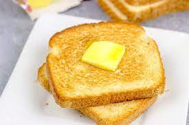

Toast

Description
This recipe will teach you how to make one of the
most easily accessible, and simple dishes known to
humanity. Bread cooked again!
Now obviously this is the easiest dish on this list
to create, even a toddler could do it. However, you must
pay close attention to make sure it comes out just how
you like it.
Ingredients
Steps
- Take two slices of the bread, and place them into
your local, handy dandy toaster. (Make sure your
toaster is set to toast for about 4 minutes)
- When toast pops up from toaster, carefully remove and
place them onto a small plate
- Use a knife to spread your butter onto the toast
- Now munch on the beautiful toast you just created!